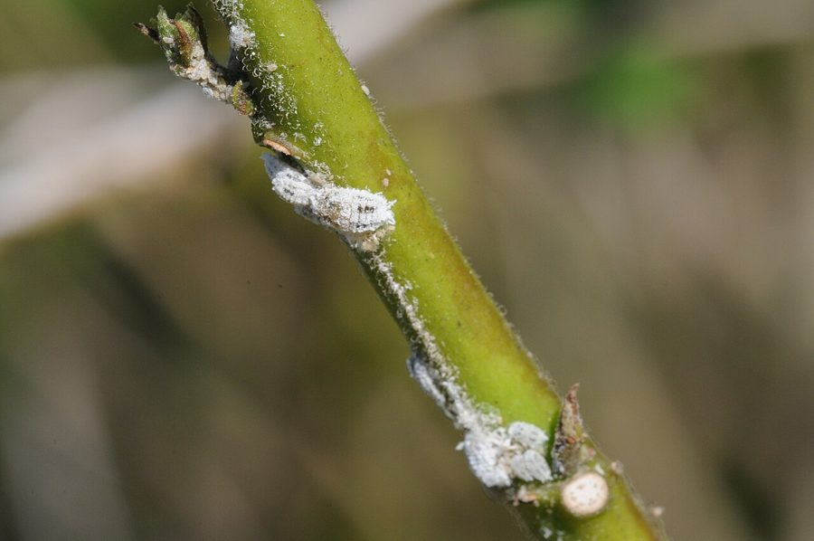

मिलीबगCotton Mealybug
Phenacoccus solenopsis · Pseudococcidae · INS-0083

- Scientific name
- Phenacoccus solenopsis Tinsley, 1898
- Family
- Pseudococcidae
- Hindi
- मिलीबग
- Local names
- mealybug, milibug, safed rui kida, mealy bug
- Status here
- invasive
- Movement
- Resident, here all year
- IUCN
- not evaluated
- Review
- audited and independently read
When to look कब देखें
Expected mainly in May, June, July, August, September, October, November.
Uses and possibilities उपयोग और संभावनाएँ
Drawn from the documented uses in the profile below, where each is labelled traditional, current or a research lead. All uses →
मिलीबग / Cotton Mealybug
Phenacoccus solenopsis Tinsley, 1898 — Pseudococcidae
मिलीबग — पिछले 15 सालों में भारत में आया, पहले अमेरिका से। अब कपास, टमाटर, मिर्च, आलू सब पर हमला करता है। माँ सफ़ेद पाउडर जैसी चीज़ से ढकी रहती है, अंडे देती है। बहुत तेज़ी से बढ़ता है, बहुत दवा सहता है। किसानों के लिए नया और मुश्किल कीट।
Quick Identification त्वरित पहचान
| Feature | Description |
|---|---|
| Adult colour | Pinkish to dark pink body, covered with white waxy powder |
| Size | 3–4 mm long; squat, oval |
| Waxy coating | Distinctive white flour-like covering on body and ovisac |
| Ovisac (egg sac) | White, cotton-like structure at the rear; 100–300 eggs |
| Clustering | Always found in groups; dense colonies on stems and leaves |
| Feeding damage | Yellowing and wilting of affected plant parts |
| Honeydew | Copious sticky excretion; attracts sooty mould |
| Host range | Feeds on 200+ plant species (highly polyphagous) |
Field tip: Look at the undersides of leaves and stems, particularly at nodes and leaf axils. You will see pinkish insects covered in white powder, often in dense clusters. The white cotton-like egg sacs at the rear are diagnostic.
हिंदी — कैसे पहचानें: डंठल और पत्तियों के जोड़ पर सफ़ेद पाउडर से ढके गुलाबी कीट, झुंड में। पत्ते पीले पड़ गए हैं।
Morphology आकारिकी
Biometrics:
| Measurement | Range |
|---|---|
| Adult female body length | 2.5–4 mm |
| Adult male (rare) | 1–1.5 mm, winged, short-lived |
| Egg | 0.5 mm, laid in ovisac |
| Nymph (1st instar) | 0.8 mm, pale |
| Nymph (final instar) | 2–3.5 mm, covered in wax |
| Ovisac size | 3–5 mm long, 150–300 eggs |
Adult female: Pink or reddish-pink, covered entirely with white waxy powder giving a flour-dusted appearance. Body is oval, slightly flattened. The rear end bears a distinctive white cotton-like ovisac (egg sac). No snout; mouthparts are piercing-sucking.
Nymph: Similar in colour to adult, smaller, covered in wax. Four instars. Nymphs and adults remain on the plant, feeding from stems and leaves.
Ovisac: The female deposits eggs in a white waxy ovisac that remains attached to her abdomen. Ovisacs are extremely visible and diagnostic.
हिंदी: गुलाबी कीट, सफ़ेद पाउडर से ढका। पीछे सफ़ेद कपास जैसी चीज़ (अंडों की थैली)। झुंड में रहता है।
Behaviour & Ecology व्यवहार और पारिस्थितिकी
The cotton mealybug arrived in India from the Americas in 2008–2009, spreading explosively through cotton-growing regions and then into vegetables, pulses, and ornamental plants. Unlike specialist insects, it feeds on over 200 plant species, making it an exceptionally dangerous invasive species. Females reproduce parthenogenetically (asexually), with each female laying 200–300 eggs multiple times in her lifetime. Development from egg to adult takes 20–25 days in warm weather (25–30°C); there are 6–8 overlapping generations per year in field conditions, allowing rapid population buildup. The insect secretes copious honeydew, which supports sooty mould growth and attracts ants that farm the mealybug and protect it from natural enemies. Because it lacks males entirely in invaded regions (populations consist entirely of females), traditional sterile-male control is impossible.
The invasion happened as follows: Phenacoccus solenopsis was native to the Americas but was accidentally introduced to India, possibly through agricultural imports. It had no natural enemies on the Indian continent, allowing uncontrolled spread. It is now the dominant mealybug of warm-season crops in India and is spreading into Southeast Asia and Africa.
हिंदी: अमेरिका से आया, 2008 में भारत में। कोई दुश्मन नहीं पाया, इसलिए फूट पड़ा। 200 तरह के पौधे खाता है। अंडे बिना नर के। महीने भर में नई पीढ़ी।
Life Cycle / Phenology जीवन चक्र
| Stage / season | Event |
|---|---|
| Egg, 4–6 days | In ovisac; 150–300 eggs per ovisac |
| Nymph, 12–16 days | Four instars on plant |
| Adult female, 25–45 days | Lays eggs in ovisac multiple times |
| Complete cycle | 20–25 days at 25–30°C |
| May–November | Active in field; continuous overlapping generations |
| December–February | Reduced activity in cool months; survives on evergreen hosts |
| Generations | 6–8 per year in field conditions |
हिंदी: गर्मी में महीने भर में। एक माँ कई बार अंडे देती है। साल भर सक्रिय।
Host Plants or Prey आहार
Primary infested crops:
- Cotton (preferred host)
- Tomato, Chilli, Potato
- Brinjal
- Okra (Abelmoschus esculentus)
- Pulse crops: pigeon pea, chickpea
- Weeds: parthenium, Alternanthera (dholi), Oxalis, and many others
Over 200 plant species documented as hosts.
Predators / Natural Enemies शत्रु
- Coccinellid beetles: Transverse ladybird (Menochilus sexmaculatus), Coccinella septempunctata; limited in impact
- Parasitoid wasps: Leptomastix dactylopii, Pseudaphycus species (available from lab rearing; field effectiveness variable)
- Predatory mites: Phytoseiulus, Amblyseius under optimal humidity
- Spiders: web-building spiders can reduce local populations
- Ants: farm the mealybug but occasionally consume crawlers
- Entomopathogenic fungi: Isaria and Beauveria under high humidity (60–90%)
Agricultural / Human Relevance कृषि प्रासंगिकता
Invasive and damaging. An invasive species with high economic impact on cotton, vegetables, and ornamentals across India since 2008. Direct feeding damage and honeydew-mediated fungal infection reduce crop yield and marketability. The species' wide host range, rapid multiplication, and apparent lack of natural enemies in its invaded range make it a long-term threat.
Today's management:
- Integrated approach: Mechanical removal of heavily infested plant parts; maintaining field margins free of weeds that harbour the pest.
- Conservation of natural enemies: Protection of parasitoids (Leptomastix dactylopii) through selective insecticide use; installation of flowering plants in field margins.
- Insecticide spray: Broad-spectrum insecticides (imidacloprid, dimethoate, spinosad) are effective but must be rotated to avoid resistance. Targeting young nymphs (crawlers) is most effective.
- Biological control attempts: Augmentation of parasitoid wasps imported from the Americas; variable success in field conditions.
Research direction (a lead, not a result). Importation and field efficacy of specialist natural enemies from the Americas (complex parasitoid assemblage). Resistance management and monitoring of insecticide-resistant strains. Host-plant resistance in cotton and vegetable varieties. Population genetics of the invasion.
हिंदी: विदेश का कीट, भारत में नया। प्रतिरोध देखने को मिल रहा। दवा बदलते रहो। परजीवी ततैयों को बचाओ। खेत के किनारे फूल लगाओ।
Expected Locally स्थानीय रूप से अपेक्षित
Not a field record. Written from published accounts for eastern Uttar Pradesh. Phenacoccus solenopsis was reported in Uttar Pradesh from 2009 onwards; by 2015 it was pan-Indian.
अभी तक स्थानीय पुष्टि नहीं। यह विवरण प्रकाशित स्रोतों से है।
Expected in cotton fields, vegetable crops (Tomato, Chilli, Potato), and garden plants throughout Basti district during the warm season (May–November), particularly in heavily cropped areas. A photograph of the characteristic white-powdered pink insect with ovisac, on any host plant, with date and location, would confirm a local record.
Distribution वितरण
Global range: Native to Central and South America; invasive in Asia (India, Pakistan, Bangladesh, China, Myanmar), Africa (Tanzania, Ethiopia), and spreading globally.
In India: Established in all cotton-growing states and spread to all warmer regions. Documented in Uttar Pradesh from 2009; now pan-Indian.
In Uttar Pradesh: Widespread in all warm agricultural regions; particularly damaging in cotton areas.
In Basti district / eastern UP: Expected on cotton, vegetables, and ornamentals during the growing season. Incidence has increased from 2010 onwards.
Research Questions शोध प्रश्न
Anyone can investigate these | कोई भी इन प्रश्नों की जाँच कर सकता है
- On which host crops is the mealybug most abundant in your area? / आपके इलाके में कौन सी फसल में सब से ज़्यादा मिलीबग है? — Count on cotton, Tomato, Chilli, Potato during the season.
- How many eggs does a single female lay during her lifetime? / एक माँ कुल कितने अंडे देती है? — Confine a female on a plant; count eggs weekly until death.
- Do insecticide-sprayed fields have lower mealybug populations than unsprayed fields the following season? — Compare two farms.
- Which natural enemy is most abundant in your field? / आपके खेत में कौन सा दुश्मन सब से ज़्यादा है? — Collect and identify.
- Does crop residue burning at the end of season reduce the next season's infestation? / फसल जलाने से अगली बार कम आता है? — Compare burnt and non-burnt fields.
Similar Species मिलती-जुलती प्रजातियाँ
| Species | How to tell apart | हिंदी |
|---|---|---|
| Papaya Mealybug (Paracoccus marginatus) | White waxy filaments present; slightly different body proportions; prefers papaya | पपीते का, अलग |
| Striped Mealybug (Ferrisia virgata) | Dark longitudinal stripes on white body; much smaller ovisac | धारी वाली, बहुत छोटी |
| Citrus Mealybug (Planococcus citri) | Smaller (1.5–2.5 mm); oval; found primarily on Mango, citrus | बहुत छोटा, अन्य पौधे |
Field rule: Pink insect covered in white powder, with white cotton-like ovisac at rear, in clusters on stems and leaves of cotton and vegetables: cotton mealybug.
Taxonomy & Classification वर्गीकरण
Original description. Described by Tinsley in 1898 in Entomological News from specimens collected in the United States. The genus Phenacoccus was erected by Cockerell in 1893.
Subspecies. No subspecies are recognised.
Family and order placement. Order Hemiptera (true bugs), family Pseudococcidae (mealybugs). The genus Phenacoccus comprises scale insects with prominent waxy coverings.
Phylogenetic notes. Phenacoccus solenopsis belongs to a clade of broad-host-range mealybugs from the Americas. Genetic comparison shows that all invasive populations in Asia are clones, likely originating from a single introduction event.
IUCN status rationale. Not evaluated. As an invasive agricultural pest, it falls outside IUCN Red List criteria.
Photo Gallery फोटो गैलरी
Photos needed आवश्यक फोटो
- [ ] Mealybug cluster on cotton stem (कपास पर भीड़)
- [ ] Female with white ovisac (अंडों की थैली वाली माँ)
- [ ] Infested tomato or chilli (टमाटर पर)
No photos yet — add field photos to media/species/cotton_mealybug/ and run node scripts/sync_photos.js.
References संदर्भ
- Tinsley, J.D. (1898). A new species of Phenacoccus from Kansas. Entomological News 9: 78–79. [original description]
- Cockerell, T.D.A. (1893). The Hemiptera of Colorado. Bulletin of the Colorado Agricultural Experiment Station 18: 1–137. [genus]
- Srinivasan, R., Sundaramurthy, V.T. & Prasad, Y.G. (2012). Phenacoccus solenopsis Tinsley, the cotton mealybug: risk in India and management options. Indian Journal of Plant Protection 40(1): 1–9.
- Mishra, S., Kumud & Sharma, A.K. (2015). Phenacoccus solenopsis — a novel pest of cotton in India: its spread and management. Insect Science 22(2): 226–234.
- Indian Council of Agricultural Research (2019). Integrated Pest Management Package for Cotton. ICAR–NCIPM, New Delhi.
- GBIF Occurrence Data — Phenacoccus solenopsis, India (2023).
Source file: species/fauna/insects/cotton_mealybug.md